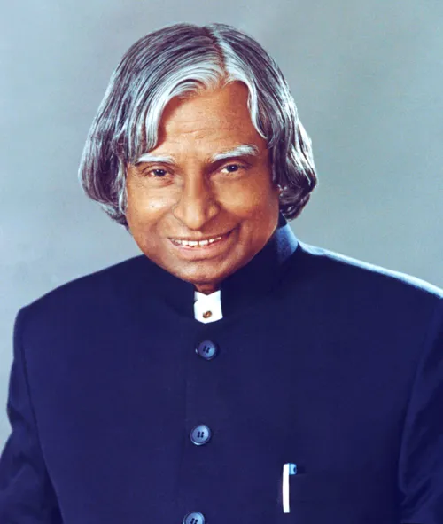

A .P .J Abdul Kalam
1931-2015
Missile Man Of India
Avul Pakir Jainulabdeen Abdul Kalam was born on 15 October 1931, to a
Tamil Muslim family in the pilgrimage centre of Rameswaram on Pamban
Island, then in the Madras Presidency and now in the State of Tamil
Nadu. His father Jainulabdeen Marakayar was a boat owner and imam of a
local mosque;[9] his mother Ashiamma was a housewife.[10][11][12][13]
His father owned a ferry that took Hindu pilgrims back and forth
between Rameswaram and the now uninhabited Dhanushkodi.[14][15] Kalam
was the youngest of four brothers and one sister in his
family.[16][17][18] His ancestors had been wealthy Marakayar traders
and landowners, with numerous properties and large tracts of land.
Marakayar are a Muslim ethnic group found in coastal Tamil Nadu and
Sri Lanka who claim descent from Arab traders and local women. The
family business had involved trading groceries between the mainland
and the island and to and from Sri Lanka, as well as ferrying pilgrims
between the mainland and Pamban. With the opening of the Pamban Bridge
to the mainland in 1914, however, the businesses failed and the family
fortune and properties were lost by the 1920s, apart from the
ancestral home. The family was poverty-stricken by the time Kalam was
born. As a young boy he had to sell newspapers t
Biography
-
After graduating from the Madras Institute of Technology in 1960,
Kalam joined the Aeronautical
-
Development Establishment of the Defence Research and Development
Organisation (by Press Information Bureau, Government of India)
-
Research & Development Service (DRDS). He started his career by
designing a small hovercraft, but
-
remained unconvinced by his choice of a job at DRDO.[26] Kalam
joined the INCOSPAR, working under
-
Vikram Sarabhai, the renowned space scientist.[13] He was
interviewed and recruited into ISRO by H. G. S.
-
Murthy, the first Director of Thumba Equatorial Rocket Launching
Station (TERLS).[27] In 1969, Kalam was
-
transferred to the Indian Space Research Organisation (ISRO) where
he was the project director of India's